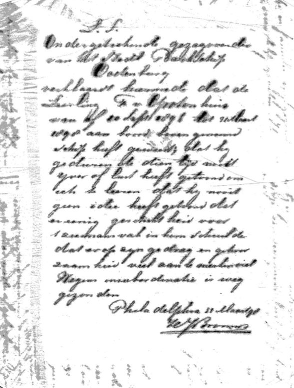
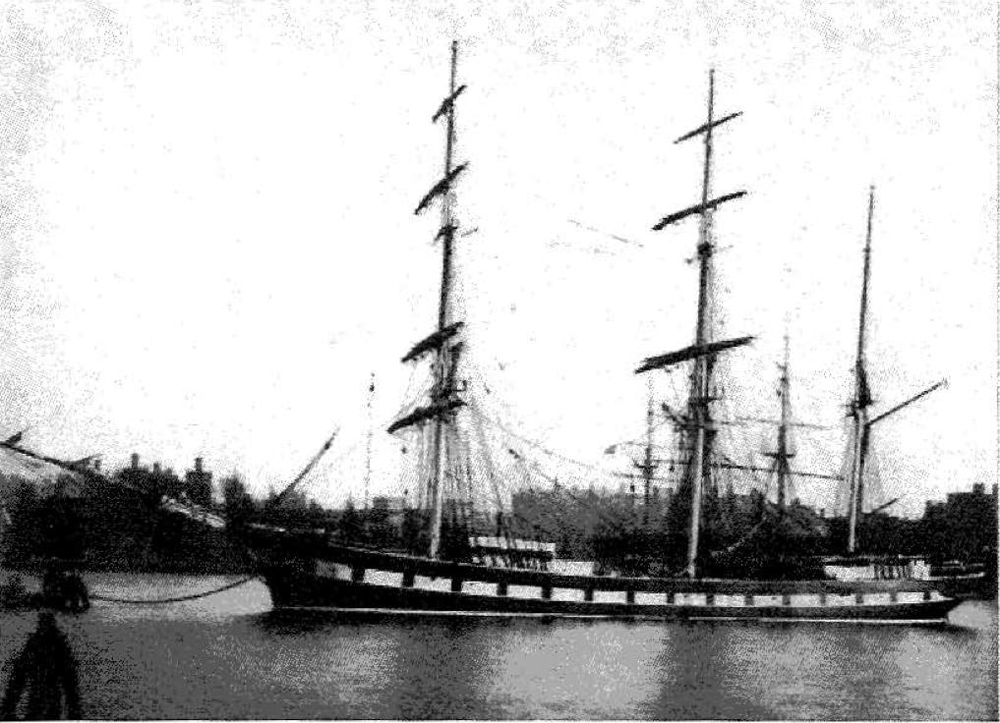
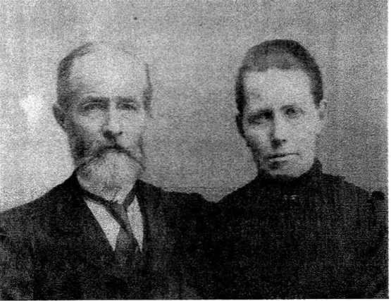
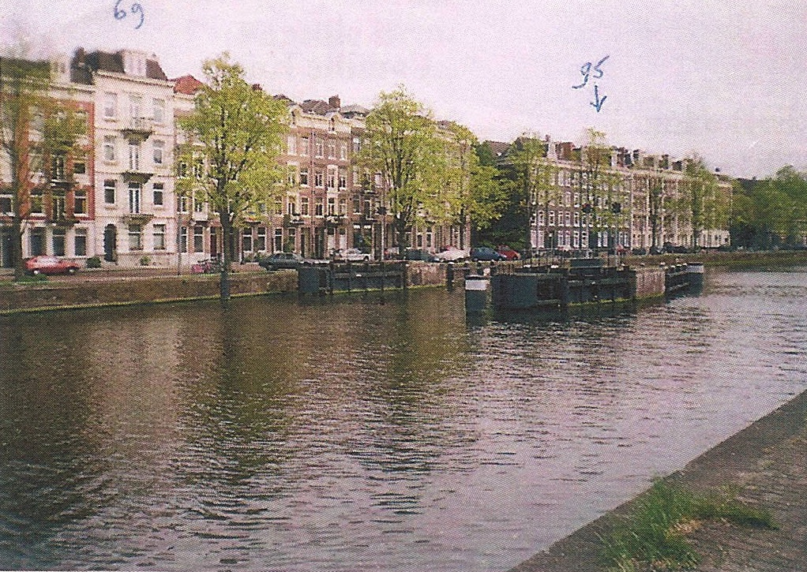
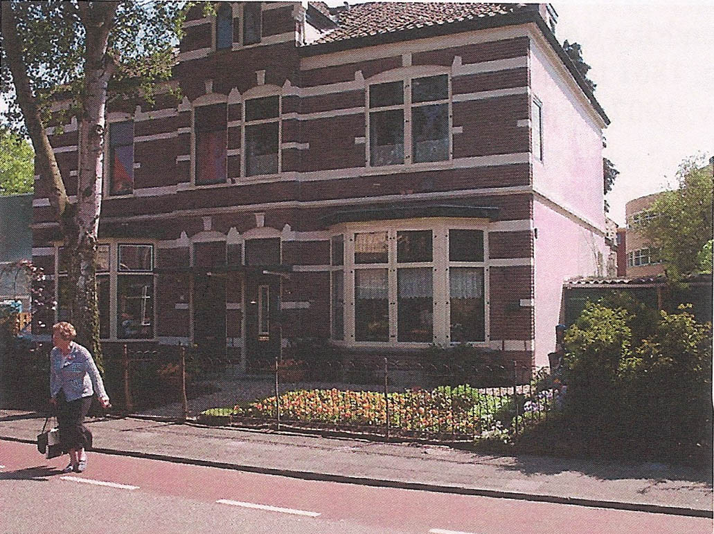
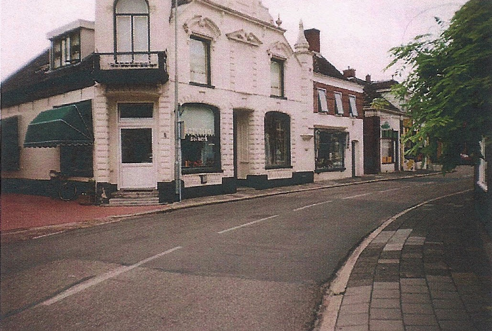
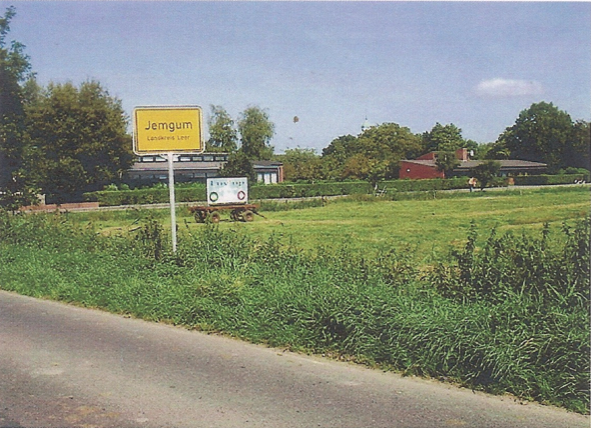
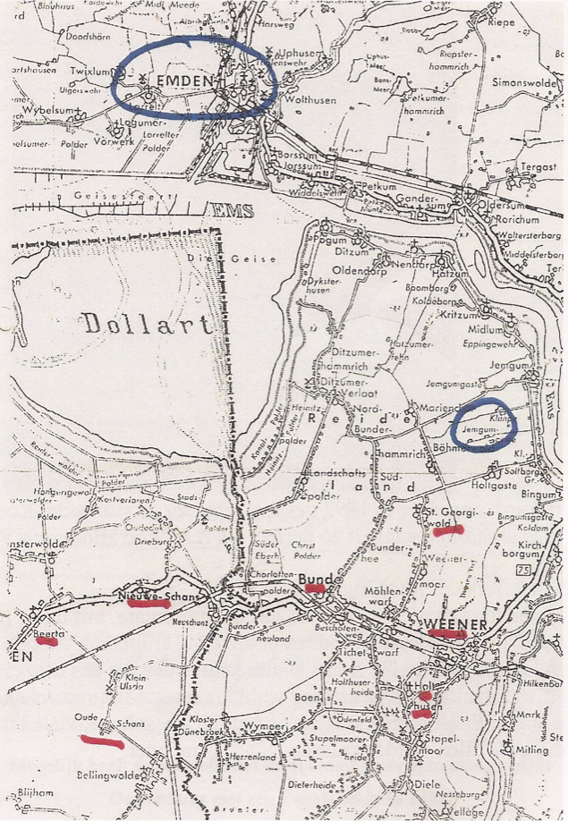

Sample of the letters

The hull of the Oostenburg was built in 1888 in Amsterdam. At that time, the sailing was not very economical and tried one of everything here improvements. It is one of the few iron sailboats, who built and measured only 1007 tons.
De bark de Oostenburg is in 1888 te Amsterdam gebouwd. In die tijd was de zeilvaart niet erg economisch en probeerde men van alles om hier verbetering in te brengen. Het is één van de weinige ijzeren zeilboten, die er gebouwd zijn en mat slechts 1007 ton.

H.J. Bron en J.H. Bron-Koch
| Foreword | 5 |
| De twee broers of de twee Stormen: | |
| The two friends | 7 |
| Prince swaps ships | 11 |
| The making ready of the Cornelia | 14 |
| The departure to sea | 16 |
| The family storm | 18 |
| Leendert goes to sea | 22 |
| Leen's assault | 24 |
| Some rules wife storm | 26 |
| Stem and Prins | 28 |
| More than 20 years later | 31 |
| The youngest storm | 33 |
| Whose wife was Funt | 36 |
| Of all | 37 |
| The first years of Hein | 39 |
| Hein goes to sea | 45 |
| Something of his sail | 52 |
| His sailing as mate | 57 |
| His later life | 59 |
| Leendert's diseas | 65 |
| End | 66 |
| Boredom | 68 |
| A short stay in Simonstad | 81 |
| Drinking and eating | 87 |
| Stuurman Stroobos, the grump | 90 |
| Notes | 97 |
Copyright Jan Bron
Nuenen
| Voorwoord | 5 |
| De twee broers of de twee Stormen: | |
| De twee vrienden | 7 |
| Prins verwisselt van schip | 11 |
| Het gereed maken van de Comelia | 14 |
| Het vertrek naar zee | 16 |
| De familie Storm | 18 |
| Leendert gaat naar zee | 22 |
| Leen's mishandeling | 24 |
| Enige regels van vrouw Storm | 26 |
| Stam en Prins | 28 |
| Ruim 20 jaar later | 31 |
| De jongste Storm | 33 |
| Wie vrouw Punt was | 36 |
| Van alles wat | 37 |
| De eerste jaren van Hein | 39 |
| Hein gaat naar zee | 45 |
| Nog iets van zijn varen | 52 |
| Zijn varen als stuurman | 57 |
| Zijn verdere levensloop | 59 |
| Leendert's ziekte | 65 |
| Einde | 66 |
| Verveling | 68 |
| Een kort verblijf in Sirnonstad | 81 |
| Drinken en eten | 87 |
| Stuurman Stroobos, de knorrepot | 90 |
| Aantekeningen | 97 |
Copyright Jan Bron
Nuenen

When H. J. Bron married, he went to live Houtmankade 69. father H. H. Koch lived all Houtmankade 95. Luppo Bron and went to live on a little later Houtmankade 63.
Toen H.J. Bron trouwde ging hij wonen Houtmankade 69. schoonvader H.H. Koch woonde toen al Houtmankade 95. en Luppo Bron ging iets later wonen op Houtmankade 63.

In Hilversum, the family went to live in the Rue Royale, first 17a, or perhaps 19a, according to a current occupant, these buildings were torn down years ago, they were in ruin. He later moved to King Street 25. Pictured are the houses Rue Royale 23, 25 (right), still a beautiful property.
In Hilversum ging de familie wonen in de Koningsstraat, eerst op nr. 17a, ofmisschien op 19a, volgens een huidige bewoner zijn deze panden al jaren geleden afgebroken, het was toen een bouwval. Later verhuisde hij naar Koningsstraat 25. Afgebeeld zijn de huizen Koningsstraat 23 er 25(rechts), nog steeds een mooi pand.

In 1898, H. J. Bron bought the (white) property in the stronghold Appingedam and established a drugstore.
In 1898 kocht H.J. Bron het (witte) pand op het Bolwerk te Appingedam en vestigde er een drogisterij.
JENGUM
centraalliggend midden in de Dollarten een belangrijke plaats vanwege de erfenis


Amsterdam, 17 April 1894
Waarde Broer en Zus en Kind,
Gij denkt misschien hij is allang naar zee, maar je ziet, dit is zo niet. Ik denk tegen den 4th of 5th. Mei omstreeks te vertrekken en ben bestemd voor Batavia, Soerabaja en Semarang. Wanneer gij mij daar later wilt schrijven is het adres altijd: Bron schip Oostenburg en naam der plaats waar heen gij schrijft. Je begrijpt dat ik nog al aardig drukte heb en's avonds ga ik gewoonlijk naar huis.
Bij ons gaat het thans wat beter, de kleine begint op te knappen en Johanna en de oudste zijn goed gezond. Bij Luppo is het steeds op dezelfde voet. Soms zou men zeggen dat bij er beter uit ziet maar een andere tijd weer niet. Beter worden zal hij wel niet. ' t Is alleen de vraag hoe lang hij 't nog kan uithouden. Als hij nu maar geen aanyallen meer krijgt, kan hij ' t lang volhouden. 't Is echter voor zijn vrouw een moeilijke tijd.
Meer nieuws of bijzonders weet ik niet. Schrijfmij liefst nog eens terug.. Van mijn komen komt natuurlijk niets van, dit kan niet was ik bij je, ik zou je dan zeggen, schrijven doe ik het niet. Nogmaals allen gegroet, je toegenegen broer,
H.J.Bron
002Met het oog op de pokken die er heersen verzoek ik U (waartoe ik al de overigen en mijzelf met huisgezin ook verplicht heb) u te laten inenten, wanneer gij daar tegen namelijk geen gemoeds- of geloofsbezwaren hebt.
Bij ons heersen de pokken nog erg, zo ook te Rotterdam. Wij weten niet waar de jantjes vandaan komen en 't is dus voor allen bepaald dit te laten doen.
Vos is weer aan boord om proviand waar te nemen en ik hoop U in de volgende week aan boord te zien. Ik zal echter de dag snel door een briefkaart laten weten. Mijn of liever onze beste groeten aan U en familie, noem ik mij immer je toegenegen.
Thuis gaat het met Marten een stuk beter, maar alle lopen wegens inenting met dikke armen, mijn vrouw het mees't. In haas
BronAmsterdam , 17 April 1894
Brother and Sister value and Child,
You may think he's already at sea , but you see , this is not so . I think by the 4th or 5th . May and am about to leave for Batavia , Surabaya and Semarang . If you want to write me later, there is always the address : Bron ship Oostenburg and name of the place where you wrote back . You understand that I 've been pretty hustle and evening I usually go home .
For us, it is now better, the little started to recover and Johanna and the oldest are in good health . In Luppo is always on the same footing . Sometimes people would say that looks nicer in there but again not another time . He will not . Better It's just a question of how long he can still stand . t If only he gets no more attacks, hij't for long. It's however a difficult time for his wife .
More news or special I do not know. Write to me much further back .. Of course, nothing comes of my coming , it can not , I was with you , I would say , write , I do not. Again all saluted , your affectionate brother ,
H.J.Bron002
sheet 2 is unreadable
003
Amsterdam , 19 April, 1894
Value Stuurman , In view of the smallpox that prevail I request you ( which I myself and all the rest also have compulsory household ) receiving any vaccinations , if thou do at because no mind or religious objections .
With us smallpox also still very prevalent , so to Rotterdam . We do not know where Jantjes come from and it is for all determined to do this.
Fox is back on board to stores to observe and hope to see you on board. Within the next week However, I will soon let the day know . A postcard My or rather our best greetings to you and family , I call me ever your affectionate .
H.J.Bron
At home with Marten a lot better , but all walk because vaccination with thick arms , my wife the most. In a hurry.
Van mijn vrouw vernam ik dat het wel mogelijk kon zijn dat U nog een en ander kleinigheid voor uw lieve dochter Mevrouw Schrauwen wenste mede te geven. U begrijpt Mevrouw, dat het mij aangenaam zal zijn, in deze zulk een kleine dienst te bewijzen. Weest u gerust zo nog al hetgeen U wilt verzenden gereed te maken en aan 't adres Kapt Bron, Schip Oostenburg, Handelskade, Amsterdam te zenden en verzoek ik U dan mij het adres van Uw zoon en dochter op te geven.
Onze bestemming is Batavia, Semarang en Soerabaja. Welke van deze plaatsen nu het dichtst bij is, zal ik hun het goed doen toekomen. Mocht het een grote partij goed zijn, dan ben ik echter verplicht het als lading te moeten beschouwen, maar zal er dan niettemin de meeste zorg voor dragen. Kleine partijtjes neem ik gaarne onder mijn hoede.
Johanna had zelf willen schrijven maar drukte in huis veroorzaakt, ook mede door mijn ophanden zijnde reis, hebben haar verhinderd. U kan echter spoedig een brief van haar verwachten.
Ik denk in 't begin van de andere maand te vertrekken, wanneer U dan iets om te verzenden hebt wacht U dan niet te lang, maar zend U het liefst voor eind April. En zie mevrouw mij als uw dienst bereidwillig aan bevelende, noem ik mij met de meeste achting Uwer dw.d.[... dienstwillige dienaar ...]
H.J. BronMocht U iets terug willen schrijven mevrouw, dan verzoek ik U Amsterdam ofte Hilversum te schrijven want iedere avond ben ik thuis. Mijne beleefde groeten aan U en uw zoon brengende met achting
H.J.Bron
De Weledele Heer
J v Renswoud en Zoon
Rotterdam
Weledele Heer,
Uw geëerd schrijven en ingesloten rekening ontvangen. Het ingesloten bewijs dient U anders in te richten. U begrijpt dat voor het netto bedrag niet door mij getekend kan worden. In geval ik uw goederen op Java niet kan verkopen zal ik verplicht zijn ze publiek te verkopen en indien ze dan niet het volle bedrag op leveren na aftrek der vendukosten, zou het min dan door mij moeten vergoed worden. Ik vertrouw dat ik het goed zal kunnen verkopen, maar heb hiervoor geen zekerheid.
Om latere onenigheid dien aangaande te voorkomen, verzoek ik U ingesloten te veranderen.
Hoogachtend,
H.J.Bron
My wife, I learned that it could be that you wish to give. Partly still some trifle for your lovely daughter Mrs. Schrauwen possible You Ma'am, understand that it will be to prove. A small service in this me such pleasant
Please be assured that even if what you want to send to get ready, and by the address Cuts Bron, Ship Oostenburg, Commercial Quay, broadcast Amsterdam and then I give up. I ask you the address of your son and daughter
Our destination is Batavia, Semarang and Surabaya. Which of these places are closest to is, I will forward them to do well. If it is a large party well, then I am, however, obliged to be regarded as a charge but there will be none the less the most care of. Small games I like to take under my wing.
Johanna had to write yourself crowds caused at home, partly due to my impending trip, have prevented her. However, you can expect a letter from her soon.
I think to leave at the beginning of the month when you other than to send you anything you do not wait too long, but send you prefer for the end of April. And see me as Mrs. your service willingly commanding, I call myself with the most esteem thy dw.d. [... obedient servant ...]
H.J.Bron
If you want to write Mrs. anything back, then I ask you to write to Amsterdam or Hilversum because every night I'm home. My polite greetings to you and your son bringing with regards
H.J.Bron
Dear sir,
J v Renswoud and Son
Rotterdam
Dear Sir,
Your honored letter and enclosed bill received. The enclosed Proof You should make other arrangements. You understand that may be.
The net amount is not drawn by me If I can not sell your goods in Java, I will be obliged to sell them publicly,
and if they do not provide the full amount after deduction of vendukosten, it would be less than to be reimbursed by me.
I trust that I will be able to sell the property but do not guarantee this.
To avoid subsequent disagreement in this respect I trapped you change request.
Yours sincerely,
H.J.Bron
Amsterdam, 23 April 1894
Waarde Vriend Kramer,
Bij mijn vertrek van Hamburg met de Oostenburg beloofde ik U aardige postmerken bij elkaar te zoeken. Beloften worden dikwijls vergeten, maar bij mij is het lange wachten daarvan geen verge- ten, maar ik kan werkelijk geen andere post of briefmerken vinden dan de hier in gesloten.
Ik hoop dat ze welkom zijn en gij er nog wat nieuws bij vindt. Nieuws kan ik U niet berichten; dat Kapt. Schulz niet met de Tromp naar zee is zult gij wel weten. Om welke reden hij er af is weet ik niet. Ik denk in begin Mei te vertrekken. Nu vriend, het ga je bijzonder goed, vooral Lubke en Linneman en laat mij nog eens iets van Hamburg nernemen aan't adres.
Kapt Bron,
Schip Oostenburg,
Handelskae, Amsterdam.
Amsterdam, 24 April 1894
De Weledele Heer Diephuis,
Geachte Mijnheer,
Ik heb twee kistjes melk*, merk M.A. ontvangen maar verzoek U nu mij opgaaf te doen hoeveel flessen hier in zijn en mij bovendien op te geven hoe duur deze flessen bij inkoop zijn en ij verkoop moeten zijn, het zou mogelijk zijn ze dan voor U te verkopen of misschien aan collega's of op Java bestellingen voor U te kunnen op doen.
Beleefd groetend,
H.J. Bron
adres Bron Oostenburg(schip naam) Handelskade.
Waarde Jacob, (A brother to Opa)
Dear Jacob,
How do I write this letter to answer different questions, for you, Geuko, or Marten whose name is written there with chalk? I think this is for you, Jacob, or for all of you. What a nonsense to ask me to look into the last will of Luppo (*a brother of Opa Bron). I don't understand it at all. You know Luppo is still alive, but I will teil you something. What Luppo wanted, I know a little of that will. But since he has changed some of it, with full consent, to profit his wife because she takes care of him while he was sick. His last will is with the lawyer whose name is well known for over 100 years. His name was earned and in case Luppo will pass away the lawyers words will be true. You ask through this letter of yours, if Luppo is a rich Bron. You have that wrong. Don't think that way. lf my thinking would be that way, I would not visit him less. Someone would think or say that he is after the money. I don't know what you think about me?
Jacob, you ask , who will take care of me? (*Opa) WHO ELSE BUT MY WIFE. You have to know that in my absence, when I am away at sea for long times, we are married. She has the power of attorney and we do have a last will.
Geuko writes that nobody visits him...Why is that? lf I had to go on with a story like this, I will move on for the good of the family.
Tomorrow I hope to get information out of Jengum, Germany, about my family who used to live there to find out how the situation is. I doubt the old cousin of mother has died. lf there is something leftover for the big Kramer Family, I will take care of it.
(* PS Jacob=Jacob Karmer, Bron took his mother's name.)
Now dear Jacob. I will keep quiet about this. lf Luppo dies, you will get a notice. It is possible that he still has a good life to live. "Oh that golden calf." What good is money if it is not used? Again, Geuko writes that it is my duty to look into the last will. I saw that in a letter not so long ago. lt will be a shame for me to look into someone's last will.
Why write a letter like this? I will be sure to keep your letter. Don't get mad or upset about my writings. I can't help it either.Now this: You have to understand that if Luppo is dying, that he has taken care of the will or does everyone take care of him or herself. I don't understand what you are talking about? I'm talking about the days of a dying Luppo because you said,"The money is wiser or worth more here than in Germany". Maybe it's just a "saying". You wrote that Geuko was in Jengum, Germany. Now I think that the hope for an inheritance is possible. Jengum will give me an answer befare I leave.
Your brother, Marten Bron Mzn.
Amsterdam, 23 April 1894
Dear Friend Kramer,
When I left Hamburg with Oostenburg I promised you nice post brands to look together. Promises are often forgotten, but for me it's not a long wait them forget, but I can not really find any other item or letter marks the closed here.
I hope that they are welcome and you are to find some news. News I can not you messages; that Captain. Schulz is not the Tromp at sea shall ye know.For whatever reason he's off, I do not know. I think to leave. In early May Now, friend, are you particularly good, especially Lubke and Linneman and let me have something to learn from Hamburg's address
Capt. Bron,
Ship Oostenburg,
Handelskae, Amsterdam.
Receive my greetings and geeloof me your affection
H.J.Bron
009
Amsterdam, 24 April 1894
The Diephuis Dear Sir,
I have two boxes of milk *, Brand M. A. received but the request you are giving me to do many bottles here and, moreover, to give me how expensive these bottles in purchasing and must be on sale it would be possible, they then sell or perhaps to colleagues or Java for You to be able to do. orders for you
Politely saluting,
H. J. Bron
Bron address
Oostenburg (ship name) Commercial Quay.
Dearly beloved wife and children,
Yesterday, I received your letter (the 6th one) and how lovely it is to get the news. This time it sounds as if you're not so good. You are not feeling so well. Marten's rhuemetism has returned so he's not 100% yet. Johanna, don't give up! She just receives power and health and will get better. I am doing fine. I will have to use medicine to fight dysentery. It is not bad but I have to take care of my health.
You know my next voyage is either to Delegoa Bay(southern Africa) or maybe to Narguise, Mozambigue. Delegoe Bay is the only place with a load of teak wood. With an agreement with Mr.Huygens,I was able to close this deal. So it takes a little longer until I come home. But care has to be taken for the ship, too. There is also the gratification for me in the form of extra income. It hasn't happened like this before and I really appreciate it.
My dog business isn't going good. Emma was sold for $25.00 and nothing for the beauty Madina. So I gave it away as a present. The butter·from the Renwood was so bad that I could not get rid of it. For Luppo, I sold some watches. That is why the .check for $250.00 is included in this letter. You can put it inthebank and later I will work the finances with Luppo. You can use it any unexpected circumstances you're in.
Yesterday, a letter came from Jacob with some writing. Sometime ago a repeating on my earlier writings I try to read the letter but don't understand it 100%. (Whathypocriticallpiousthoughts)
I will write him back after I understand his writings. Within a couple of days, I am going to Semarang,lndonesia to load the ship. I won't have time on another ship whichwaslayingatanchorforthecoast. lfthevoyagetotheCapeofAfrica turns out ok, I will return for another load.
If you really need some help with money, go to the ship owner. Don't worry because he will help you. When I have time, I will go for Luppo to Passruaio but I need some money from him. Soon I will write.
The ship's owner at Stien's place is ok. The children are sweet. Etta is a good girl, Anna looks good as does Krokye. John, too, looks like his mother.
She is good for the children. Jansen has a good 2nd wife and mother. Yesterday he and both girls were on board with me. He had to visit the captain.
-H J Bron